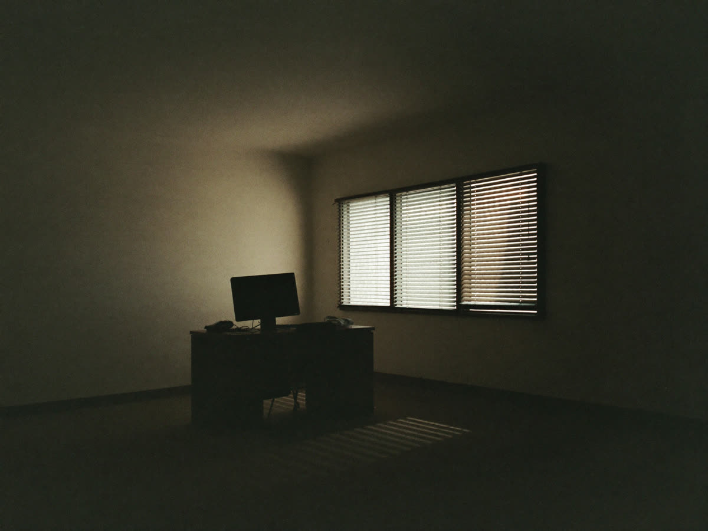
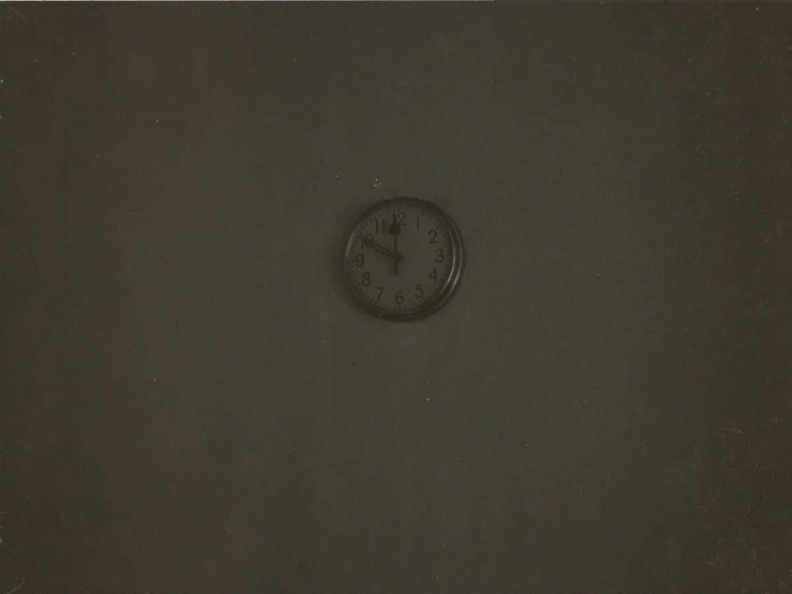
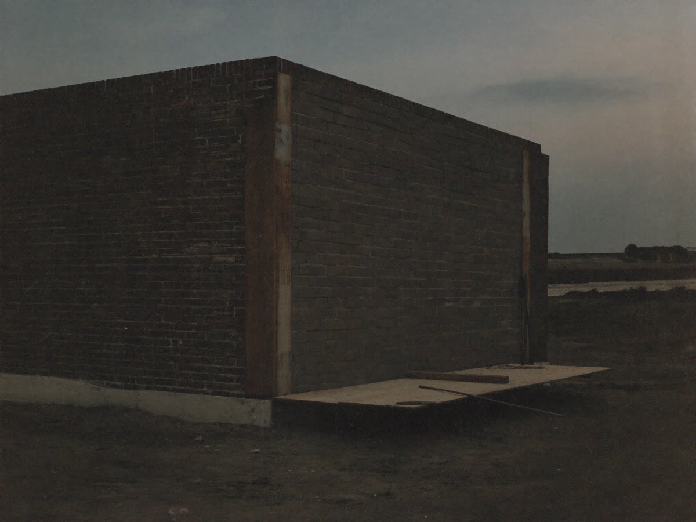

Wie lange dauert SEO?
Eine realistische Zeitrechnung, aufgeteilt nach dem, was schnell geht, und dem, was dauert.
Die ehrliche Antwort lautet: Es kommt darauf an, woran gearbeitet wird. Manches wirkt in Wochen, anderes braucht Monate, und beides passiert im selben Projekt gleichzeitig. Deshalb ist die Frage "wie lange dauert SEO" ungefähr so präzise wie die Frage, wie lange Renovieren dauert. Die Antwort hängt davon ab, ob eine Wand gestrichen oder ein Dach neu gedeckt wird.
Was sich sagen lässt, ist, welche Art von Arbeit in welchem Zeitraum sichtbar wird. Danach können Sie Ihre eigene Erwartung einstellen, und, wichtiger noch, erkennen, ob ein Dienstleister Ihnen etwas erzählt, das nicht sein kann.

Wochen: Technik und Profil
Alles, was vorhandene Sichtbarkeit freilegt statt neue aufzubauen, wirkt schnell. Dazu gehört, blockierte Seiten wieder freizugeben, fehlende Seitentitel zu ergänzen, doppelte Adressen zusammenzuführen und die Ladezeit auf dem Telefon in den Griff zu bekommen. Dazu gehört auch das Google Unternehmensprofil: Kategorie richtig setzen, Leistungen eintragen, echte Fotos hochladen.
Bei solchen Eingriffen sind zwei bis sechs Wochen realistisch. Der Grund ist einfach: Google muss nichts Neues bewerten, sondern nur etwas sehen, das vorher verdeckt war. Eine Seite, die aus dem Index gefallen ist, kommt zurück. Ein Eintrag, der unvollständig war, wird vollständig und damit für mehr Suchanfragen berücksichtigt.
Am schnellsten von allem wirkt die lokale Sichtbarkeit. Ein vollständig gepflegtes Unternehmensprofil kann innerhalb von zwei Wochen dazu führen, dass Sie bei Suchen aus der Umgebung in der Karte erscheinen, wo Sie vorher nicht waren. Für Betriebe mit Kundschaft im Umkreis ist das regelmäßig der erste Punkt, an dem das Telefon klingelt, lange bevor sich auf der Website etwas tut. Was dort im Einzelnen zu tun ist, steht im Beitrag Lokale SEO für Handwerk und Dienstleistung.
Eine Einschränkung gehört dazu: Schnell heißt nicht sofort. Google ruft eine Seite nicht täglich ab, sondern in Abständen, die davon abhängen, wie oft sich dort bisher etwas geändert hat. Bei einer Seite, die seit zwei Jahren unverändert ist, kann es zwei Wochen dauern, bis eine Korrektur überhaupt bemerkt wird. Über die Search Console lässt sich eine erneute Prüfung anstoßen, aber erzwingen lässt sich nichts.
Deshalb fangen wir damit an. Es ist der Teil mit dem besten Verhältnis von Aufwand zu Wirkung, er kostet am wenigsten, und er zeigt früh, ob überhaupt etwas in Bewegung kommt. Wer stattdessen mit zwanzig Blogartikeln beginnt, während die Hälfte der Seiten gar nicht im Index steht, produziert Arbeit, die nicht ankommt.
Monate: Inhalte und Positionen
Eine neue Seite braucht Zeit, bis Google sie gefunden, eingeordnet und beobachtet hat, wie Nutzer darauf reagieren. Bei wenig umkämpften Begriffen sind zwei bis drei Monate realistisch, bei umkämpften sechs und mehr. Dazwischen passiert nichts Spektakuläres, und genau das irritiert die meisten.
Der typische Verlauf sieht so aus: Die Seite taucht nach zwei Wochen irgendwo auf Position 60 auf. Nach einem Monat steht sie auf 30, nach zwei auf 18, nach drei auf 11. In dieser ganzen Zeit kommt über sie praktisch kein Besucher, denn unterhalb der ersten Seite passiert fast nichts. Erst der letzte Schritt von Position 11 auf 8 bringt plötzlich spürbar Verkehr.
Dazu kommt, dass Google neue Seiten nicht sofort endgültig einsortiert. Es ist normal, dass eine frische Seite kurz überraschend weit oben erscheint und danach wieder absackt: Die Suchmaschine testet, wie Nutzer reagieren, und korrigiert danach. Wer diesen ersten Ausschlag für das Ergebnis hält, erlebt vier Wochen später eine Enttäuschung, die keine ist.
Das ist der Punkt, an dem viele Projekte abgebrochen werden, und zwar vier Wochen bevor sie angefangen hätten zu wirken. Wenn Ihnen jemand nach drei Monaten sagt, es tue sich nichts, lassen Sie sich die Positionen zeigen und nicht die Besucherzahl. Bewegung von 60 auf 15 ist ein Erfolg, auch wenn noch niemand geklickt hat.

Ein Jahr und länger: Gewicht
Der dritte Zeitraum betrifft das, was eine Domain insgesamt an Gewicht hat: die Zahl und Qualität der Verweise von außen, der Umfang an Inhalten, das Alter und die Verlässlichkeit. Das ist der Teil, der am langsamsten entsteht und am längsten hält.
Dafür ist dieser Teil der einzige, der weiterarbeitet, wenn Sie selbst gerade nichts tun. Eine Seite mit Gewicht rankt auch mit neuen Unterseiten schneller, weil sie insgesamt als verlässlich gilt. Das ist der Zinseszins der Suchmaschinenoptimierung: Die ersten zwölf Monate sind mühsam, danach wird jeder weitere Schritt billiger.
Hier liegt auch der Grund, warum ein Wettbewerber mit zwei Jahren Vorsprung schwer einzuholen ist. Er hat nicht unbedingt bessere Seiten, er hat sie nur länger. Und genau deshalb ist der beste Zeitpunkt zum Anfangen immer der, an dem man gerade darüber nachdenkt.
Was in diesem Zeitraum passiert, lässt sich kaum von Monat zu Monat messen, sondern nur über längere Strecken. Ein Rückblick über zwölf Monate zeigt eine Entwicklung, die in der Wochenansicht vollständig im Rauschen verschwindet.
Wovon die Dauer abhängt
Drei Dinge entscheiden, ob Ihr Projekt am unteren oder am oberen Ende dieser Spannen landet.
Der Zustand der Seite zu Beginn. Eine technisch saubere Seite mit brauchbarer Struktur startet Monate vor einer Seite, bei der zuerst aufgeräumt werden muss. Was bei Ihnen zutrifft, steht in einer Bestandsaufnahme, siehe SEO.
Die Stärke des Wettbewerbs. Nicht die Branche entscheidet, sondern wer bei Ihren konkreten Begriffen bereits steht. Ein Fliesenleger im Landkreis hat eine andere Ausgangslage als ein Anbieter, der gegen bundesweite Portale antritt.
Wie schnell umgesetzt wird. Dieser Punkt wird am meisten unterschätzt und ist derjenige, den Sie selbst in der Hand haben. Projekte verzögern sich selten an der Suchmaschine. Sie verzögern sich daran, dass eine Textfreigabe drei Wochen liegen bleibt, dass niemand Zugriff auf das System hat oder dass die versprochenen Fotos nie kommen. Wer intern jemanden benennt, der entscheiden darf, verkürzt die Laufzeit mehr als jede Methode.
Woran Sie sehen, dass es wirkt
Damit die Wartezeit erträglich und überprüfbar wird, brauchen Sie die richtigen Anzeichen. In dieser Reihenfolge treten sie auf.
Nach zwei bis vier Wochen: die Zahl der indexierten Seiten stimmt, Fehlermeldungen in der Search Console gehen zurück, das Unternehmensprofil wird häufiger aufgerufen.
Nach sechs bis zwölf Wochen: neue Suchbegriffe tauchen überhaupt zum ersten Mal auf, auch auf schlechten Positionen. Das ist das erste belastbare Zeichen, dass die neuen Seiten verstanden wurden.
Was in dieser Phase ausdrücklich kein brauchbares Zeichen ist: die Zahl der Besucher insgesamt. Die schwankt mit der Jahreszeit, mit Feiertagen und mit allem, was sonst gerade passiert. Wer die Gesamtbesucher als Maßstab nimmt, liest in den ersten Monaten vor allem Rauschen.
Nach drei bis sechs Monaten: die vereinbarten Begriffe bewegen sich in Richtung erste Seite, die Zahl der Klicks aus der Suche steigt messbar, und es kommen Anfragen, bei denen auf die Frage nach dem Weg "über Google" gesagt wird.
Alle drei Punkte stehen in einem brauchbaren Bericht, und zwar auf einer Seite, nicht auf vierzig. Wie der aussieht, steht unter Reporting.

Fazit
Rechnen Sie mit ersten Bewegungen nach vier bis sechs Wochen, mit belastbaren Ergebnissen nach drei bis sechs Monaten und mit einer tragfähigen Position nach einem Jahr. Planen Sie das Budget entsprechend: Drei Monate sind bei den meisten Vorhaben zu kurz, um überhaupt zu sehen, ob etwas wirkt. Wie sich das auf die Kosten auswirkt, steht im Beitrag Was kostet SEO?
Was Sie in der Zwischenzeit tun können, ist das, was ohnehin Ihre Aufgabe bleibt: Fragen aufschreiben, die Kunden am Telefon stellen, Fotos von fertigen Arbeiten machen, Bewertungen einsammeln. Das sind die Zutaten, an denen es später regelmäßig hakt, und sie entstehen nebenbei, wenn man früh damit anfängt.
Und misstrauen Sie jeder anderen Zusage. Wer Ihnen Seite 1 in zwei Wochen verspricht, beschreibt nicht Ihre Branche, sondern sein Verkaufsgespräch. Wenn Sie wissen wollen, wo Sie heute stehen und wie lange der Weg bei Ihnen realistisch ist, sagen wir Ihnen das in der kostenlosen SEO-Analyse, und zwar auch dann, wenn die Antwort unbequem ist.
Weiterlesen
Woran Sie eine unseriöse SEO-Agentur erkennen
Sieben Sätze, nach denen Sie das Gespräch beenden können.
6 min lesen →Brauche ich für SEO eine neue Website?
Meistens nicht. Wann ein Neubau trotzdem der günstigere Weg ist.
6 min lesen →Keyword-Recherche für Einsteiger
Wie Sie in einer Stunde herausfinden, wonach Ihre Kundschaft wirklich sucht.
6 min lesen →Wo steht Ihre Seite gerade?
Sie bekommen schriftlich, für welche Suchbegriffe Sie gefunden werden, wer vor Ihnen steht und woran es liegt.